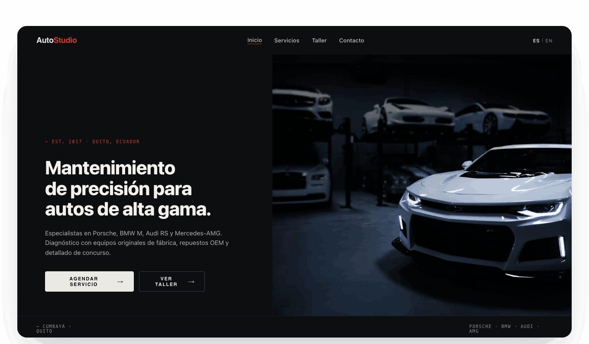

Qué haces, para quién y por qué elegirte.
Diseño web estratégico · Quito, Ecuador
Tu negocio ya tiene nivel.
Tu web también debería tenerlo.
Diseño experiencias digitales modernas para empresas que necesitan comunicar mejor, generar confianza y convertir visitas en conversaciones reales.
Diseño directo con José Guerrero · Sin intermediarios · Hecho a medida



La primera impresión importa
Una web mediocre hace que una empresa seria parezca una opción más.
Cuando el mensaje no es claro, las imágenes no transmiten nivel y el contacto cuesta encontrar, el cliente duda antes de escribir. El diseño correcto ordena esa primera impresión.
Una imagen digital acorde a tu nivel real.
Caminos simples hacia WhatsApp, formulario o reunión.
Proyectos seleccionados
Diseño para negocios que no quieren verse genéricos.
Cada proyecto parte de la identidad, la audiencia y el objetivo comercial de la empresa.
JDC Watches
Una experiencia de compra más precisa y una presentación alineada al valor de cada pieza.

OroEcuador
Una presencia de exportación clara, visual y enfocada en generar confianza.
AutoStudio
Una presentación sobria para un servicio técnico de alto valor.
Espacio reservado para el próximo caso de estudio. Las capturas y resultados se publicarán cuando estén disponibles.
Soluciones
No vendo páginas. Diseño una presencia digital que ayude a tu negocio a avanzar.
Presencia esencial
Para negocios que necesitan una web clara, elegante y profesional.
- Diseño a medida
- Estructura y copy comercial
- Versión móvil
- WhatsApp y analítica
Web comercial
Para empresas que necesitan generar contactos y ordenar su mensaje.
- Arquitectura de contenidos
- Páginas de servicio
- Formularios y conversión
- SEO técnico inicial
Plataforma o catálogo digital
Para empresas con productos, procesos o necesidades comerciales más complejas.
- Catálogos y estructuras amplias
- Experiencia móvil
- Integraciones existentes
- Capacitación y soporte
Proceso
Un proceso simple, con criterio en cada decisión.
Entender el negocio
Revisamos objetivos, clientes, oferta y qué debe lograr la web.
Definir el mensaje
Ordenamos prioridades y acciones que debe tomar el visitante.
Diseñar y construir
Transformo la estrategia en una experiencia rápida, clara y adaptable.
Lanzar y mejorar
Publicamos, medimos y dejamos una base lista para evolucionar.
Retrato profesional de José Guerrero
pendiente de incorporar
pendiente de incorporar
José Guerrero
Trabajo directamente contigo.
Soy José Guerrero. Diseño cada proyecto personalmente, desde la primera conversación hasta la publicación. No delego tu web a un equipo desconocido ni uso fórmulas copiadas.
Comunicación directa.Diseño hecho a medida.Enfoque comercial y visual.
Tu próximo proyecto
Tu próxima web debería estar a la altura de tu negocio.
Cuéntame qué estás construyendo y revisemos si tiene sentido trabajar juntos.